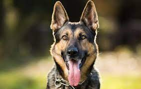
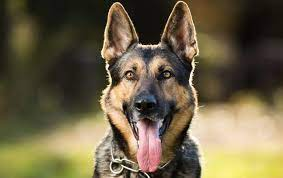

husky
bull dog

german shepherd



The dog is a domesticated descendant of the wolf. Also called the domestic dog, it is derived from extinct gray wolves, and the gray wolf is the dog's closest living relative. The dog was the first species to be domesticated by humans.
They are intelligent but somewhat independent and stubborn. They thrive on human company, but need firm, gentle training right from puppy hood. These are dogs bred to run, and their love of running may overcome their love for their guardians at times
Bulldogs are often associated with determination, strength, and courage due to their historical occupation, though the modern-day dog is bred for appearance and friendliness and not suited for significant physical exertion. They are often used as mascots by universities, sports teams, and other organizations
The German Shepherd, also known in Britain as an Alsatian, is a German breed of working dog of medium to large size. The breed was developed by Max von Stephanitz using various traditional German herding dogs from 1899. It was originally bred as a herding dog, for herding sheep.